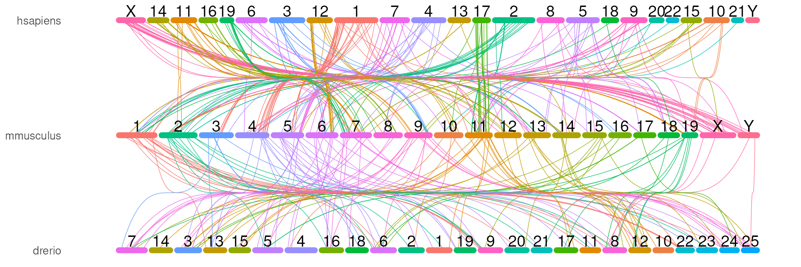
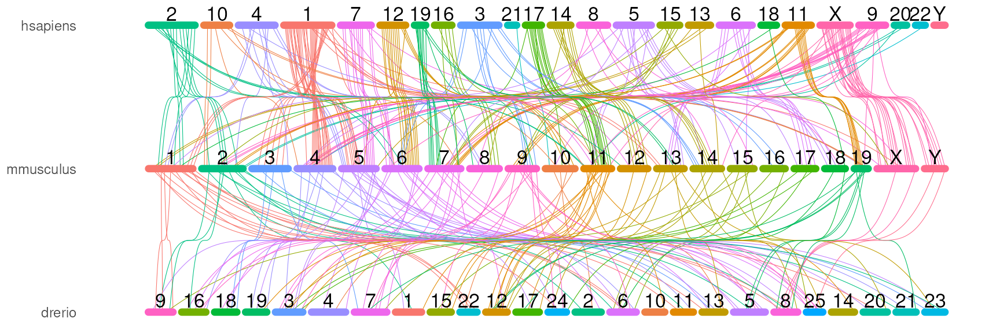
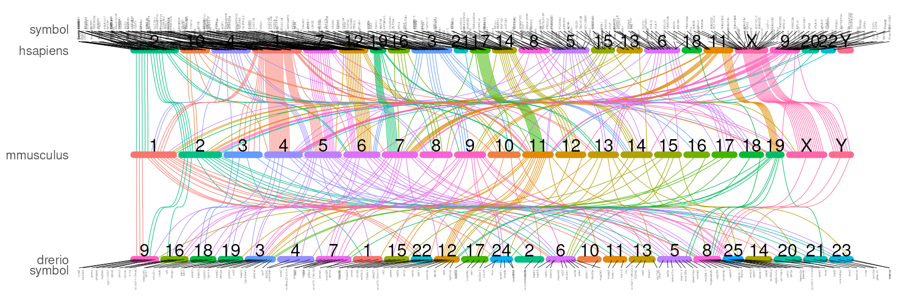
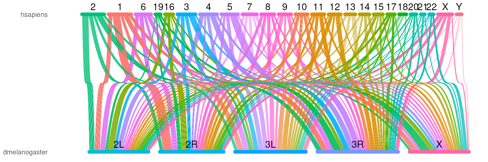

vignettes/orthoRibbon.Rmd
orthoRibbon.RmdAbstract
OrthoRibbon is a visualization toolkit for displaying orthologous gene relationships across species using ribbon-based diagrams. It enables intuitive comparison of conserved genes and genomic correspondence between chromosomes or genomic regions. The package supports flexible input formats and produces publication-quality figures for comparative genomics and evolutionary analysis..
Comparative genomics plays a central role in understanding gene conservation and evolutionary relationships across species. Orthologous genes, which arise from speciation events and often retain similar biological functions, provide a fundamental framework for cross-species genomic comparison. Visualizing these relationships in an intuitive and scalable manner is important for interpreting genome organization and gene correspondence among multiple species.
OrthoRibbon is an R package designed to visualize orthologous gene relationships across species using ribbon-based diagrams. The package connects homologous genes between genomes through ribbons that link their genomic positions, enabling users to easily explore conserved genes and cross-species genomic structures. By transforming ortholog tables into clear visual representations, OrthoRibbon facilitates comparative genomic analysis and produces customizable, publication-quality figures.
OrthoRibbon supports flexible input formats and can integrate ortholog annotations from common databases such as Ensembl or other orthology inference tools. The package is designed to be lightweight and highly customizable, allowing users to control genomic layouts, ribbon aesthetics, and species ordering. These features make OrthoRibbon a practical visualization tool for researchers studying evolutionary conservation, genome organization, and cross-species gene relationships.
if (!require("BiocManager", quietly = TRUE)) {
install.packages("BiocManager")
}
BiocManager::install("jianhong/orthoRibbon")There are five main steps to visualize your data with
orthoRibbon:
Step 1. Load the required library.
Step 2. Define the species abbreviation. They are abbreviated species identifiers derived from the binomial (Latin) species names. You can try to guess it from common names. The plot order is decided by the order of your input show as ‘com_name’ here.
com_name <- geneClusterPattern::guessSpecies(
c('human', 'house mouse', 'zebrafish'))
names(com_name) <- com_name # must assign the names.
com_name## hsapiens mmusculus drerio
## "hsapiens" "mmusculus" "drerio"Step 2. Retrieve chromosome, homologs, and gene coordinates via Biomart.
# prepare mart for biomart
marts <- geneClusterPattern::guessSpecies(com_name, output='mart')
# prepare all the ensembl ids
ids <- orthoRibbon::getGeneIDs(com_name, marts)
# get chromosome info
chrom_infos<- lapply(com_name, GenomeInfoDb::getChromInfoFromEnsembl)
# retrieve all the homologs
homologs <- orthoRibbon::getHomologGRs(ids, com_name, marts)
# retrieve all the gene ranges
genes_gr <- orthoRibbon::getGeneGRs(ids, marts, homologs)
# reformat the homologs to data.frame
homologs_df <- getHomologIDs(homologs)Since this step retrieve information via “biomaRt”, it will take some time. We will load presaved data.
extdata <- system.file('extdata', package='orthoRibbon')
chrom_infos <- readRDS(file.path(extdata, 'chrom_infos.rds'))
names(chrom_infos)## [1] "hsapiens" "mmusculus" "drerio"
head(chrom_infos[[1]], n=2)## name length coord_system synonyms toplevel non_ref circular
## 474 19 58617616 chromosome CM000681.... TRUE FALSE NA
## 475 20 64444167 chromosome CM000682.... TRUE FALSE NA
homologs_df <- readRDS(file.path(extdata, 'homolog_df.human.mouse.zebrafish.rds'))
head(homologs_df, n=2)## gene_id1 gene_id2
## 1 ENSG00000065135 ENSMUSG00000000001
## 2 ENSG00000091583 ENSMUSG00000000049## GRanges object with 2 ranges and 2 metadata columns:
## seqnames ranges strand | gene_name
## <Rle> <IRanges> <Rle> | <character>
## ENSMUSG00000000001 3 108014596-108053462 - | Gnai3
## ENSMUSG00000000049 11 108234180-108305222 + | Apoh
## species
## <character>
## ENSMUSG00000000001 mmusculus
## ENSMUSG00000000049 mmusculus
## -------
## seqinfo: 1489 sequences from an unspecified genome; no seqlengthsStep 3. Prepare the plot data.
set.seed(42)
plotData <- buildPlotData(com_name, homologs_df, genes_gr, chrom_infos,
chromosome_order_method = 'max',
max_links=500 # small number for illustration
)
names(plotData)## [1] "homolog_df_list" "chrom_bars_df" "chrom_label_df"
## [4] "symbol_list_top" "symbol_list_bottom"You may want to try different methods to set the chromosome orders.
# Different methods optimize different criteria:
# 1. GW (Gruvaeus-Wainer) - minimizes gradient measure
chr_order_gw <- buildPlotData(com_name, homologs_df, genes_gr, chrom_infos,
chromosome_order_method = "GW")
# 2. OLO (Optimal Leaf Ordering) - optimal for dendrograms
chr_order_olo <- buildPlotData(com_name, homologs_df, genes_gr, chrom_infos,
chromosome_order_method = "OLO")
# 3. TSP (Traveling Salesman Problem) - minimizes path length
chr_order_tsp <- buildPlotData(com_name, homologs_df, genes_gr, chrom_infos,
chromosome_order_method = "TSP")
# 4. Spectral - uses eigenvectors
chr_order_spec <- buildPlotData(com_name, homologs_df, genes_gr, chrom_infos,
chromosome_order_method = "Spectral")
# 5. Spearman distance
chr_order_dist <- buildPlotData(com_name, homologs_df, genes_gr, chrom_infos,
chromosome_order_method = "spearman")
# 5. customized
seq_names <- lapply(chrom_infos, function(.ele) sortSeqlevels(.ele$name))
chr_order_manu <- buildPlotData(com_name, homologs_df, genes_gr, chrom_infos,
chr_orders=seq_names)Step 4. Calculate the exactly position for Bezier curve.
There are three methods to calculate the position, by chromosome locations of the gene, by the index of the gene, by the homolog chromosome names of the gene.
# by coordinates
bezier_chr <- buildBezierDF(plotData$homolog_df_list,
colname1='topChr_finalOffset',
colname2='bottomChr_finalOffset')
# by the index
bezier_ix <- buildBezierDF(plotData$homolog_df_list,
colname1='topIx_finalOffset',
colname2='bottomIx_finalOffset')
# by homolog chromosome names
bezier_mini <- buildBezierDF(plotData$homolog_df_list,
colname1='topMini_finalOffset',
colname2='bottomMini_finalOffset')Step 5. Plot the data.
# by coordinates
orthoRibbonPlot(com_name, bezier_chr,
plotData$chrom_bars_df,
plotData$chrom_label_df)
# by the index
orthoRibbonPlot(com_name, bezier_ix,
plotData$chrom_bars_df,
plotData$chrom_label_df)
# by homologous chromosome names
# the gene is not ordered by coordinates but ordered by the homologous chromosome names
## And Here we will show the symbols for each homologous.
symbol_list_top <- plotData$symbol_list_top
symbol_list_top$x <- symbol_list_top$xMini
symbol_list_bottom <- plotData$symbol_list_bottom
symbol_list_bottom$x <- symbol_list_bottom$xMini
orthoRibbonPlot(com_name, bezier_mini,
plotData$chrom_bars_df,
plotData$chrom_label_df,
show_symbol=TRUE,
symbol_list_top=symbol_list_top,
symbol_list_bottom=symbol_list_bottom,
symbol_size=1)
First we prepare the species abbreviation.
And then load the ortholog data. You can get the ortholog data via tools like OrthoFinder, odp, or databases like OrthoDB, eggNOG.
extdata <- system.file('extdata', package='orthoRibbon')
chrom_infos <- readRDS(file.path(extdata, 'human_fly/chrom_infos.rds'))
names(chrom_infos)## [1] "hsapiens" "dmelanogaster"
head(chrom_infos[[1]], n=2)## name length coord_system synonyms toplevel non_ref circular
## 1 KI270510.1 2415 scaffold chrUn_KI.... TRUE FALSE NA
## 2 KI270539.1 993 scaffold chrUn_KI.... TRUE FALSE NA## gene_id ortholog_group symbol species seq start
## 1 ENSG00000028277 1 POU2F2 hsapiens 19 42086110
## 2 ENSG00000064835 1 POU1F1 hsapiens 3 87259404Last, plot the data.
plotData <- buildPlotData(com_name, homologs_df,
chrom_infos = chrom_infos,
chromosome_order_method = 'max',
max_links=1000)
bezier_mini <- buildBezierDF(plotData$homolog_df_list,
colname1='topMini_finalOffset',
colname2='bottomMini_finalOffset')
orthoRibbonPlot(com_name, bezier_mini,
plotData$chrom_bars_df,
plotData$chrom_label_df)
## R version 4.6.0 (2026-04-24)
## Platform: x86_64-pc-linux-gnu
## Running under: Ubuntu 24.04.4 LTS
##
## Matrix products: default
## BLAS: /usr/lib/x86_64-linux-gnu/openblas-pthread/libblas.so.3
## LAPACK: /usr/lib/x86_64-linux-gnu/openblas-pthread/libopenblasp-r0.3.26.so; LAPACK version 3.12.0
##
## locale:
## [1] LC_CTYPE=en_US.UTF-8 LC_NUMERIC=C
## [3] LC_TIME=en_US.UTF-8 LC_COLLATE=en_US.UTF-8
## [5] LC_MONETARY=en_US.UTF-8 LC_MESSAGES=en_US.UTF-8
## [7] LC_PAPER=en_US.UTF-8 LC_NAME=C
## [9] LC_ADDRESS=C LC_TELEPHONE=C
## [11] LC_MEASUREMENT=en_US.UTF-8 LC_IDENTIFICATION=C
##
## time zone: Etc/UTC
## tzcode source: system (glibc)
##
## attached base packages:
## [1] stats4 stats graphics grDevices utils datasets methods
## [8] base
##
## other attached packages:
## [1] GenomeInfoDb_1.48.0 Seqinfo_1.2.0 IRanges_2.46.0
## [4] S4Vectors_0.50.0 BiocGenerics_0.58.0 generics_0.1.4
## [7] geneClusterPattern_0.1.3 orthoRibbon_0.1.2
##
## loaded via a namespace (and not attached):
## [1] BiocIO_1.22.0 bitops_1.0-9
## [3] filelock_1.0.3 tibble_3.3.1
## [5] polyclip_1.10-7 XML_3.99-0.23
## [7] rpart_4.1.27 lifecycle_1.0.5
## [9] httr2_1.2.2 pwalign_1.8.0
## [11] lattice_0.22-9 ensembldb_2.36.0
## [13] MASS_7.3-65 backports_1.5.1
## [15] magrittr_2.0.5 Hmisc_5.2-5
## [17] sass_0.4.10 rmarkdown_2.31
## [19] jquerylib_0.1.4 yaml_2.3.12
## [21] otel_0.2.0 Gviz_1.56.0
## [23] DBI_1.3.0 RColorBrewer_1.1-3
## [25] abind_1.4-8 GenomicRanges_1.64.0
## [27] AnnotationFilter_1.36.0 biovizBase_1.60.0
## [29] RCurl_1.98-1.18 nnet_7.3-20
## [31] VariantAnnotation_1.58.0 tweenr_2.0.3
## [33] rappdirs_0.3.4 seriation_1.5.8
## [35] grImport_0.9-7 ggrepel_0.9.8
## [37] BiocStyle_2.40.0 pkgdown_2.2.0
## [39] codetools_0.2-20 DelayedArray_0.38.1
## [41] ggforce_0.5.0 tidyselect_1.2.1
## [43] UCSC.utils_1.8.0 farver_2.1.2
## [45] TSP_1.2.7 matrixStats_1.5.0
## [47] BiocFileCache_3.2.0 base64enc_0.1-6
## [49] GenomicAlignments_1.48.0 jsonlite_2.0.0
## [51] trackViewer_1.48.0 Formula_1.2-5
## [53] iterators_1.0.14 systemfonts_1.3.2
## [55] foreach_1.5.2 tools_4.6.0
## [57] progress_1.2.3 ragg_1.5.2
## [59] strawr_0.0.92 Rcpp_1.1.1-1.1
## [61] glue_1.8.1 gridExtra_2.3
## [63] SparseArray_1.12.2 xfun_0.57
## [65] MatrixGenerics_1.24.0 dplyr_1.2.1
## [67] ca_0.71.1 withr_3.0.2
## [69] BiocManager_1.30.27 fastmap_1.2.0
## [71] latticeExtra_0.6-31 rhdf5filters_1.24.0
## [73] digest_0.6.39 R6_2.6.1
## [75] textshaping_1.0.5 colorspace_2.1-2
## [77] jpeg_0.1-11 dichromat_2.0-0.1
## [79] biomaRt_2.68.0 RSQLite_2.4.6
## [81] cigarillo_1.2.0 data.table_1.18.2.1
## [83] rtracklayer_1.72.0 prettyunits_1.2.0
## [85] InteractionSet_1.40.0 httr_1.4.8
## [87] htmlwidgets_1.6.4 S4Arrays_1.12.0
## [89] pkgconfig_2.0.3 gtable_0.3.6
## [91] blob_1.3.0 registry_0.5-1
## [93] S7_0.2.2 XVector_0.52.0
## [95] htmltools_0.5.9 ProtGenerics_1.44.0
## [97] scales_1.4.0 Biobase_2.72.0
## [99] png_0.1-9 knitr_1.51
## [101] rstudioapi_0.18.0 rjson_0.2.23
## [103] checkmate_2.3.4 curl_7.1.0
## [105] cachem_1.1.0 rhdf5_2.56.0
## [107] stringr_1.6.0 parallel_4.6.0
## [109] foreign_0.8-91 AnnotationDbi_1.74.0
## [111] restfulr_0.0.16 desc_1.4.3
## [113] pillar_1.11.1 grid_4.6.0
## [115] vctrs_0.7.3 RANN_2.6.2
## [117] dbplyr_2.5.2 cluster_2.1.8.2
## [119] htmlTable_2.5.0 evaluate_1.0.5
## [121] GenomicFeatures_1.64.0 cli_3.6.6
## [123] compiler_4.6.0 Rsamtools_2.28.0
## [125] rlang_1.2.0 crayon_1.5.3
## [127] labeling_0.4.3 interp_1.1-6
## [129] fs_2.1.0 stringi_1.8.7
## [131] deldir_2.0-4 BiocParallel_1.46.0
## [133] txdbmaker_1.8.0 Biostrings_2.80.0
## [135] lazyeval_0.2.3 Matrix_1.7-5
## [137] BSgenome_1.80.0 hms_1.1.4
## [139] bit64_4.8.0 ggplot2_4.0.3
## [141] Rhdf5lib_2.0.0 KEGGREST_1.52.0
## [143] SummarizedExperiment_1.42.0 memoise_2.0.1
## [145] bslib_0.10.0 bit_4.6.0